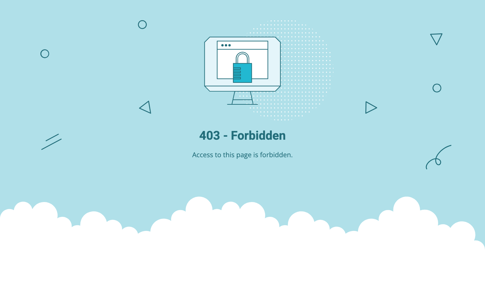

null/100 · - · 行业：roofing · 地区：Sydney · Google 评价：5★ （0 条）
投入分级： C 批量轻触 — 模板邮件 + 报告
PDF 链接，无主动跟进
触发依据： - audit 未运行 · 默认 C
下一步行动： 标准模板邮件 + master.md PDF 链接，无主动跟进。等客户回复触发后再投入。
TBD · audit 不完整
线索来源 · 联系开场可用: - 来源:
Google Maps (gosom 抓取) - 搜索关键词:
roofing in sydney - 首次发现: 2026-05-14 -
Batch:
pipe-roofing-sydney-202605150758
independent_http_site
TBD · audit 不完整
TBD · audit 不完整
--n/aGoogle Places · most_relevant (max 5)